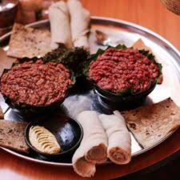

Kitfo

Kitfo is an Ethiopian traditional dish that originated among the Gurage people. It consists of minced raw beef, marinated in mitmita and niter kibbeh. The word comes from the Ethio-Semitic triconsonantal root k-t-f, meaning "to chop finely; mince". Kitfo cooked lightly rare is known as kitfo leb leb.
Ingredients
- Minced Beef
- Mitmita
- Niter Kibe(Ethiopian Butter)
- Salt
- Korerima (Ethiopian Cardmom)
- paper
Steps
- Filter out the blood from the meat. You can put the meet in a net and press a rock covered with a plastic bag on it
- let it rest for 1hr
- In a big pot mix the Mitmita, Korerima, Salt, paper and Niter Kibe
- put the stove to low heat and heat up the mixture for two minutes
- Add the minced beef and quickly mix it together
- depending on how cooked you want it adjust the heat
Home